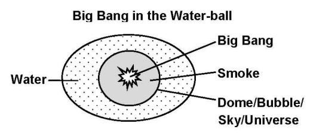
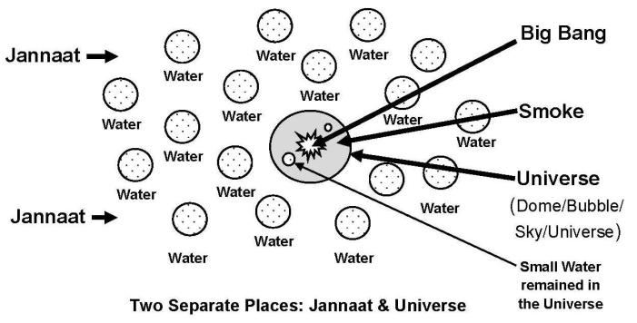

Christian scholars usually consider the six days as six earthly days. However, in light of the Quran, these were periods of time. We will consider these days as periods of time.
খ্রিস্টান পণ্ডিতরা সাধারণত ছয় দিনকে ছয়টি পার্থিব দিন হিসাবে বিবেচনা করেন। যাইহোক, কুরআনের আলোকে, এগুলো ছিল সময়ের পর্যায়। আমরা এই দিনগুলিকে সময়ের সময় হিসাবে বিবেচনা করব।
―In the beginning, when God created the universe, the Earth was non-existent. The raging ocean that covered everything was engulfed in total darkness and the Soul of God was hovering over the water.‖ – Genesis 1: (1–2), Holy Bible, GNB
- শুরুতে, ঈশ্বর যখন মহাবিশ্ব সৃষ্টি করেছিলেন, তখন পৃথিবীর অস্তিত্ব ছিল না। সমস্ত কিছুকে ঢেকে রাখা উত্তাল সমুদ্র সম্পূর্ণ অন্ধকারে নিমজ্জিত ছিল এবং ঈশ্বরের আত্মা জলের উপরে ঘোরাফেরা করছিল।'' – জেনেসিস 1: (1-2), পবিত্র বাইবেল, GNB
The Quran too talks about this water:
কুরআনেও এই পানি সম্পর্কে বলা হয়েছে:
―He it is Who created the ―Skies and Lands‖ (this universe) in six days and His Arsh was over the waters.‖ [Al Quran 11:7] From a scientific perspective, the time and space began with the Big Bang. Science has no evidence of what exists outside the universe. However, God created the water before the Big Bang. Therefore, the water was outside the universe, in the Super Space. The Super Space is the space beyond the space of this universe. [The water was mainly created for another universe named Jannaat.] Thus, the universe (Skies and Lands) is one of God's creations. He created the Super Space and other realms as well, such as Jannaat, Araf, Arsh, and so on. The soul that was hovering over the water was a soul provided by God. In another Bible (Knox, a Catholic Bible), the soul is translated as the breath of God. The verses are provided below:
"তিনিই তিনি যিনি "আকাশ ও ভূমি" (এই মহাবিশ্ব) ছয় দিনে সৃষ্টি করেছেন এবং তাঁর আরশ ছিল জলের উপর।" [আল কুরআন 11:7] বৈজ্ঞানিক দৃষ্টিকোণ থেকে, সময় এবং স্থান বিগ ব্যাং দিয়ে শুরু হয়েছিল। মহাবিশ্বের বাইরে কী আছে তার কোনো প্রমাণ বিজ্ঞানের কাছে নেই। যাইহোক, বিগ ব্যাং এর আগে ঈশ্বর জল সৃষ্টি করেছিলেন। অতএব, জল মহাবিশ্বের বাইরে, সুপার স্পেসে ছিল। সুপার স্পেস হল এই মহাবিশ্বের মহাকাশের বাইরের স্থান। [পানি প্রধানত জান্নাত নামক আরেকটি মহাবিশ্বের জন্য সৃষ্টি করা হয়েছিল।] সুতরাং, মহাবিশ্ব (আকাশ ও ভূমি) ঈশ্বরের সৃষ্টির মধ্যে একটি। তিনি সুপার স্পেস এবং অন্যান্য ক্ষেত্র যেমন জান্নাত, আরাফ, আরশ ইত্যাদি সৃষ্টি করেছেন। যে আত্মা জলের উপর ঘোরাফেরা করছিল তা ঈশ্বরের দেওয়া একটি আত্মা। অন্য বাইবেলে (নক্স, একটি ক্যাথলিক বাইবেল), আত্মাকে ঈশ্বরের শ্বাস হিসাবে অনুবাদ করা হয়েছে। আয়াতগুলো নিচে দেওয়া হলঃ
―God, at the beginning of time, created heaven (sky) and earth. Earth was still an empty waste and darkness hung over the deep, but already over its waters stirred the breath of God. Then God said, Let there be light, and the light began‖ – Genesis 1 (1-2), Holy Bible (Knox)
- ঈশ্বর, সময়ের শুরুতে, আকাশ (আকাশ) এবং পৃথিবী সৃষ্টি করেছেন। পৃথিবী তখনও একটি খালি বর্জ্য ছিল এবং অন্ধকার গভীরে ঝুলে ছিল, কিন্তু ইতিমধ্যেই এর জলের উপরে ঈশ্বরের নিঃশ্বাসকে আলোড়িত করেছে। তারপর ঈশ্বর বললেন, আলো হোক, এবং আলো শুরু হল” – জেনেসিস 1 (1-2), পবিত্র বাইবেল (নক্স)
Therefore, the soul, being the breath of God, was a soul provided by Him. God provided the soul from His own soul to create the universe. The Quran also talks about this soul:
অতএব, আত্মা, ঈশ্বরের শ্বাস, তাঁর দ্বারা প্রদত্ত একটি আত্মা ছিল। ঈশ্বর মহাবিশ্ব সৃষ্টির জন্য তাঁর নিজের আত্মা থেকে আত্মা প্রদান করেছেন। কুরআনও এই আত্মা সম্পর্কে কথা বলে:
―He created you from a Soul Single (Nafsin- Wahidatin), then created favorable pairs (Double Helix DNA Molecules), and He sent down for you of the cattle eight pairs, He creates you in the wombs of your mothers—creation after creation—three tortures (on Allah). That Allah is your Lord; for Him is the dominion. There is no god but He. Then how are you turned away?‖ [Al Quran 39:6]
তিনি তোমাদেরকে এক আত্মা (নাফসিন-ওয়াহিদাতিন) থেকে সৃষ্টি করেছেন, তারপর সৃষ্টি করেছেন অনুকূল জোড়া (ডাবল হেলিক্স ডিএনএ অণু), এবং তিনি তোমাদের জন্য গবাদি পশু থেকে আট জোড়া নাযিল করেছেন, তিনি তোমাদের মাতৃগর্ভে সৃষ্টি করেছেন-সৃষ্টির পর সৃষ্টি-তিনটি নির্যাতন (আল্লাহর উপর)। যে আল্লাহ তোমাদের পালনকর্তা; তাঁর জন্য রাজত্ব। তিনি ছাড়া কোন উপাস্য নেই। তাহলে তোমরা কিভাবে মুখ ফিরিয়ে নিলে?'' [আল কুরআন 39:6]
―It is He Who hath produced you from a Soul Single (Nafsin-Wahidatin); here is a place of dwelling and storage; We detail Our signs for people who understand.‖ [Al Quran 6:98]
-তিনিই তোমাদের সৃষ্টি করেছেন এক আত্মা থেকে (নাফসিন-ওয়াহিদাতিন); এখানে বাসস্থান এবং স্টোরেজ একটি জায়গা; যারা বোঝে তাদের জন্য আমরা আমার নিদর্শনগুলো বিস্তারিত বর্ণনা করি।'' [আল কুরআন ৬:৯৮]
Thus, the provided soul is called Nafsin-Wahidatin (a Single Soul) in the Quran. It created the universe. We need an understanding of the soul to comprehend it. The Nafsin-Wahidatin was a composite soul. It comprised many types of elementary souls (ruhs). An elementary soul and a force field are the same thing [The soul is deliberately discussed in Section-1 of Chapter-1 and in Section-10 of Chapter-6]. Parts of Nafsin-Wahidatin were used to create the Arsh and the water (the water was primarily created for another universe named Jannaat). The rest of the Nafsin- Wahidatin, with which the universe was created, had been hovering over the water. When God commanded, 'Let there be light,' the part of Nafsin-Wahidatin that was hovering over the water got fragmented, producing force fields such as the Electromagnetic Force Field (light), Strong Nuclear Force Field, and Weak Nuclear Force Field. The universe was created from these force fields. ―Then God commanded, ―Let there be light‖ and light appeared.‖ – Genesis 1:3, Holy Bible, GNB
সুতরাং, প্রদত্ত আত্মাকে কুরআনে নাফসিন-ওয়াহিদাতিন (একক আত্মা) বলা হয়েছে। এটি মহাবিশ্ব সৃষ্টি করেছে। আত্মাকে বোঝার জন্য আমাদের বোঝার প্রয়োজন। নাফসীন-ওয়াহিদাতিন ছিল একটি যৌগিক আত্মা। এটি অনেক ধরণের প্রাথমিক আত্মা (রুহ) নিয়ে গঠিত। একটি প্রাথমিক আত্মা এবং একটি শক্তি ক্ষেত্র একই জিনিস [আত্মা ইচ্ছাকৃতভাবে অধ্যায়-1 এর ধারা-1 এবং অধ্যায়-6-এর 10-এ আলোচনা করা হয়েছে]। নাফসিন-ওয়াহিদাতিনের কিছু অংশ আরশ এবং পানি (পানি প্রাথমিকভাবে জান্নাত নামে আরেকটি মহাবিশ্বের জন্য তৈরি করা হয়েছিল) তৈরি করতে ব্যবহৃত হয়েছিল। বাকি নাফসিন-ওয়াহিদাতিন, যা দিয়ে মহাবিশ্ব সৃষ্টি হয়েছে, তা পানির ওপরে ঘোরাফেরা করছিল। যখন ঈশ্বর আদেশ করলেন, 'আলো হোক', নাফসিন-ওয়াহিদাতিনের যে অংশটি জলের উপর ঘোরাফেরা করছিল তা খণ্ডিত হয়ে গেল, ইলেক্ট্রোম্যাগনেটিক ফোর্স ফিল্ড (আলো), স্ট্রং নিউক্লিয়ার ফোর্স ফিল্ড এবং দুর্বল নিউক্লিয়ার ফোর্স ফিল্ডের মতো বল ক্ষেত্র তৈরি করে। এই বল ক্ষেত্র থেকে মহাবিশ্ব সৃষ্টি হয়েছে। "তারপর ঈশ্বর আদেশ করলেন, "আলো হোক" এবং আলো আবির্ভূত হউক।" - জেনেসিস 1:3, পবিত্র বাইবেল, জিএনবি
In the scientific community, the part of Nafsin- Wahidatin that produced this universe is called the GUT Force (Grand Unified Theory Force). .
বৈজ্ঞানিক সম্প্রদায়ে, নাফসিন-ওয়াহিদাতিনের যে অংশটি এই মহাবিশ্ব তৈরি করেছে তাকে বলা হয় জিইউটি ফোর্স (গ্র্যান্ড ইউনিফাইড থিওরি ফোর্স)। .
Figure 41.4: Provided Soul / GUT Force + (Plus) / Nafsin-Wahidatin
চিত্র 41.4: প্রদান করা আত্মা / GUT ফোর্স + (প্লাস) / নাফসিন-ওয়াহিদাতিন
The soul (nafs) of a living creature is a combination of unknown force fields (yet to be discovered). Thus, the Nafsin-Wahidatin produced many unknown force fields as well, with which the souls (nafses) of living creatures were created. Moreover, parts of the Nafsin-Wahidatin were used to create the Arsh and Water. Therefore, the Nafsin-Wahidatin may be called the GUT Force + (Plus). According to the Quran, the Gravitational Force is not from Nafsin-Wahidatin; it is a sustaining soul of Allah. Scientists too do not include the gravitational force in the GUT Force. [The gravity is deliberately discussed in Secion-7 of Chapter-2.] 3b. Second Day – Holy Bible
একটি জীবন্ত প্রাণীর আত্মা (নফস) হল অজানা শক্তি ক্ষেত্রগুলির সংমিশ্রণ (এখনও আবিষ্কার করা হয়নি)। এইভাবে, নাফসিন-ওয়াহিদাতিন অনেক অজানা শক্তির ক্ষেত্র তৈরি করেছিল, যার সাহায্যে জীবিত প্রাণীদের আত্মা (নফসেস) তৈরি হয়েছিল। অধিকন্তু, নাফসিন-ওয়াহিদাতিনের অংশগুলি আরশ এবং জল তৈরিতে ব্যবহৃত হয়েছিল। অতএব, নাফসিন-ওয়াহিদাতিনকে GUT ফোর্স + (প্লাস) বলা যেতে পারে। কুরআনের মতে, মহাকর্ষীয় বল নাফসিন-ওয়াহিদাতিন থেকে নয়; এটা আল্লাহর একটি টেকসই আত্মা. বিজ্ঞানীরাও GUT বাহিনীতে মহাকর্ষ বলকে অন্তর্ভুক্ত করেন না। [মাধ্যাকর্ষণটি ইচ্ছাকৃতভাবে অধ্যায়-2-এর বিভাগ-7-এ আলোচনা করা হয়েছে।] 3b. দ্বিতীয় দিন - পবিত্র বাইবেল
In the next phase, the light was separated from the darkness.
পরের পর্বে আলো আঁধার থেকে আলাদা হয়ে গেল।
―God was pleased with what He saw. Then He separated the light from the darkness.‖ – Genesis 1:4, Holy Bible
- আল্লাহ যা দেখলেন তাতে সন্তুষ্ট হলেন। অতঃপর তিনি আলোকে অন্ধকার থেকে পৃথক করলেন।'' – জেনেসিস 1:4, পবিত্র বাইবেল
Probably, the light was absorbed into a black hole outside the water-ball. It had a light-releasing white hole in the center of the water-ball. The white hole is the Big Bang. Thus, the light was separated from the darkness (black hole). The light was pushed into the center of the water-ball through a passage of space. The idea of moving through a black hole was explored by Stephen Hawking in his book Black Holes and Baby Universes. As a black hole evaporates, the matter that had fallen into it could potentially re-emerge through another white hole, at a very large distance. This matter might then enter a baby universe, a small, self-contained universe that branches off from our own region of the universe. In this context, Hawking made a critical analysis of time. He considered the time of a baby universe to be imaginary time. In the scenario described in the Holy Bible, the Big Bang can be seen as representing the baby universe; thus, our time could be understood as the imaginary time that began at the Big Bang. ―And He named the light ‗day‘ and the darkness ‗night‘. Evening passed, and morning came that was the first day‖ – Genesis 5, Holy Bible, GNB
সম্ভবত, আলো জল-বলের বাইরে একটি কালো গহ্বরে শোষিত হয়েছিল। এটি জল-বলের কেন্দ্রে একটি আলো-মুক্ত সাদা গর্ত ছিল। হোয়াইট হোল হল বিগ ব্যাং। এভাবে আলোকে অন্ধকার (ব্ল্যাক হোল) থেকে আলাদা করা হলো। আলোটি স্থানের একটি প্যাসেজ দিয়ে জল-বলের কেন্দ্রে ঠেলে দেওয়া হয়েছিল। ব্ল্যাক হোলের মধ্য দিয়ে চলার ধারণাটি স্টিফেন হকিং তার ব্ল্যাক হোলস অ্যান্ড বেবি ইউনিভার্স বইয়ে আবিষ্কার করেছিলেন। একটি ব্ল্যাক হোল বাষ্পীভূত হওয়ার সাথে সাথে, এতে যে বিষয়টি পড়েছিল তা খুব বড় দূরত্বে আরেকটি হোয়াইট হোলের মাধ্যমে পুনরায় আবির্ভূত হতে পারে। এই বিষয়টি তখন একটি শিশু মহাবিশ্বে প্রবেশ করতে পারে, একটি ছোট, স্বয়ংসম্পূর্ণ মহাবিশ্ব যা মহাবিশ্বের আমাদের নিজস্ব অঞ্চল থেকে শাখা প্রশাখা। এই প্রসঙ্গে, হকিং সময়ের একটি সমালোচনামূলক বিশ্লেষণ করেছেন। তিনি একটি শিশু মহাবিশ্বের সময়কে কাল্পনিক সময় বলে মনে করতেন। পবিত্র বাইবেলে বর্ণিত দৃশ্যে, বিগ ব্যাং শিশু মহাবিশ্বের প্রতিনিধিত্বকারী হিসাবে দেখা যায়; এইভাবে, আমাদের সময়কে বিগ ব্যাং থেকে শুরু হওয়া কাল্পনিক সময় হিসাবে বোঝা যেতে পারে। এবং তিনি আলোর নাম দিয়েছেন 'দিন' এবং অন্ধকারের নাম 'রাত্রি'। সন্ধ্যা পেরিয়ে গেল, এবং সকাল হল সেই প্রথম দিন” – জেনেসিস 5, পবিত্র বাইবেল, GNB
After the Big Bang, the universal time began. Almighty God named the light as day and the darkness as night.
বিগ ব্যাং এর পর সার্বজনীন সময় শুরু হয়। সর্বশক্তিমান ঈশ্বর আলোর নাম দিয়েছেন দিন এবং অন্ধকারকে রাত।
―Then God commanded ―Let there be dome to divide the water and to keep it in two separate places;‖ and it was dome. So, God made a dome, and it separated the water under it from the water above it. He named the dome ―sky‖. Evening passed, and morning came that was the second day.‖ – Genesis 1: (6-8), Holy Bible, GNB
"অতঃপর ঈশ্বর আদেশ করলেন "জলকে ভাগ করার জন্য এবং দুটি পৃথক স্থানে রাখার জন্য গম্বুজ হোক" এবং এটি গম্বুজ ছিল। সুতরাং, ঈশ্বর একটি গম্বুজ তৈরি করলেন এবং এটি তার নীচের জলকে উপরের জল থেকে আলাদা করে দিল। তিনি গম্বুজটির নাম দিয়েছেন ‘আকাশ’। সন্ধ্যা পেরিয়ে গেল এবং সকাল হল দ্বিতীয় দিন।'' – জেনেসিস 1: (6-8), পবিত্র বাইবেল, GNB
The verses say that the 'Dome' was named 'Sky.' In the Holy Bible, 'Sky' means 'Universe.' The Dome/Sky (Universe) was full of smoke, which means that the universe was full of smoke.
আয়াতগুলো বলে যে 'গম্বুজ'টির নাম ছিল 'আকাশ'। পবিত্র বাইবেলে 'আকাশ' মানে 'মহাবিশ্ব'। গম্বুজ/আকাশ (মহাবিশ্ব) ধোঁয়ায় পূর্ণ ছিল, যার মানে মহাবিশ্ব ধোঁয়ায় পূর্ণ ছিল।
FIGURE 41.5: Big Bang inside the Water

চিত্র 41_5 / Figure 41_5
চিত্র 41.5: জলের ভিতরে বিগ ব্যাং
চিত্র 41_5 / Figure 41_5
So, the Big Bang occurred in the center of a huge water-ball, producing hydrogen and helium. These gases formed a huge bubble in the center of the water-ball. A bubble and a dome look the same, which is why it has been called a 'dome' in the Holy Bible. When a bubble is produced in water, it rises to the surface. But the enormous water-ball was floating in Super Space; it had no up or down. The bubble (dome) was expanding at an enormous speed in the center of the water-ball. The expanding bubble (dome) formed the universe. Eventually, the water-ball burst due to the expanding bubble. The water, gaining greater momentum, moved away from the bubble/dome. The water was used to create another universe named Jannaat.
সুতরাং, বিগ ব্যাংটি একটি বিশাল জলের বলের কেন্দ্রে ঘটেছিল, যা হাইড্রোজেন এবং হিলিয়াম তৈরি করেছিল। এই গ্যাসগুলি জল-বলের কেন্দ্রে একটি বিশাল বুদবুদ তৈরি করেছিল। একটি বুদবুদ এবং একটি গম্বুজ দেখতে একই রকম, তাই পবিত্র বাইবেলে একে 'গম্বুজ' বলা হয়েছে। যখন একটি বুদবুদ জলে উত্পাদিত হয়, এটি পৃষ্ঠের উপরে উঠে যায়। কিন্তু বিশাল জলের বল সুপার স্পেসে ভাসছিল; এটা কোন আপ বা নিচে ছিল. বুদবুদ (গম্বুজ) জল-বলের কেন্দ্রে একটি বিশাল গতিতে প্রসারিত হচ্ছিল। প্রসারিত বুদবুদ (গম্বুজ) মহাবিশ্ব গঠন করেছে। অবশেষে, প্রসারিত বুদবুদের কারণে জল-বলটি ফেটে যায়। জল, বৃহত্তর গতি অর্জন করে, বুদবুদ/গম্বুজ থেকে দূরে সরে গেছে। জান্নাত নামক আরেকটি মহাবিশ্ব সৃষ্টির জন্য পানি ব্যবহার করা হয়েছিল।
FIGURE 41.6: Two Separate Universes

চিত্র 41_6 / Figure 41_6
চিত্র 41.6: দুটি পৃথক মহাবিশ্ব
চিত্র 41_6 / Figure 41_6
The verses under discussion talk about ―two separate places‖: ―Let there be dome to divide the water and to keep it in two separate places‖. The water was placed into 'two separate places.' These 'two separate places' are two universes: the Samawaat / Skies (this universe) and the Jannaat (another universe). We know from the Quran that the width of the Jannaat is equal to the width of the Samawaat (this universe). Therefore, the Jannaat is a separate universe altogether.
আলোচ্য আয়াতগুলি "দুটি পৃথক স্থান" সম্পর্কে কথা বলে: "জল বিভক্ত করার জন্য গম্বুজ হোক এবং দুটি পৃথক স্থানে রাখা হোক"। জল 'দুটি পৃথক জায়গায়' স্থাপন করা হয়েছিল। এই 'দুটি পৃথক স্থান' হল দুটি মহাবিশ্ব: সামওয়াত/আকাশ (এই মহাবিশ্ব) এবং জান্নাত (অন্য মহাবিশ্ব)। আমরা কুরআন থেকে জানি যে জান্নাতের প্রস্থ সামাওয়াতের (এই মহাবিশ্বের) প্রস্থের সমান। অতএব, জান্নাত সম্পূর্ণরূপে একটি পৃথক মহাবিশ্ব।
―Be quick in the race for forgiveness from your Lord and for a Jannaat, whose width is that of the Skies and Lands (this universe), prepared for the righteous…‖ [Al Quran 3:133]
"তোমার প্রভুর ক্ষমা এবং জান্নাতের জন্য দৌড়ে দ্রুত হও, যার প্রস্থ আকাশ ও জমিনের (এই মহাবিশ্ব) ধার্মিকদের জন্য প্রস্তুত করা হয়েছে..." [আল কুরআন 3:133]
―Race to forgiveness from your Lord and the Jannaat; the width of which is as the width of the Sky and Land‖ [Al Quran 57:2]
- তোমার প্রভুর ক্ষমা ও জান্নাতের দিকে দৌড়াও; যার প্রস্থ আকাশ ও জমিনের প্রস্থের সমান” [আল কুরআন ৫৭:২]
Holy Bible too, says about two universes:
পবিত্র বাইবেলও দুটি মহাবিশ্ব সম্পর্কে বলে: